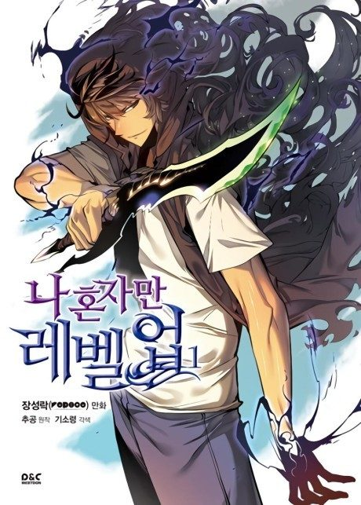

Solo Leveling
나 혼자만 레벨업
After the anime, read the manga from Chapter 111.
8.0AniList score
—Animeter, no votes yet
25episodes, 2 seasons
Rate it or report where you stopped
Key events
These are spoilers. They stay blurred until you reveal them, one at a time or all at once.
Double Dungeon Ep 1–2
- The raid party finds a temple of statues that kill anyone who breaks its commandments.
- Jinwoo stays behind so the others can escape and is nearly killed.
- Jinwoo wakes in hospital with a mysterious System that only he can see.
Becoming the Player Ep 3–10
- Jinwoo levels up through daily quests and penalty zones.
- Other hunters betray him during raids, and he kills them in self-defense.
- Jinwoo hides his rapid growth from the Hunter Association.
Job Change Quest Ep 11–12
- Jinwoo faces the knight commander Igris.
- Jinwoo earns the hidden Necromancer class and gains the power to raise the dead as shadows.
Red Gate and Demon Castle Ep 13–20
- Jinwoo is trapped in a Red Gate with other hunters and fights his way out.
- Jinwoo climbs the Demon Castle in search of an elixir for his mother.
- Jinwoo is reassessed and revealed to be an S-rank hunter.
Jeju Island Ep 21–25
- The S-rank hunters of Korea and Japan plan the raid together.
- A newly born Ant King, Beru, overwhelms the raid team.
- Jinwoo arrives on the island to confront the Ant King.